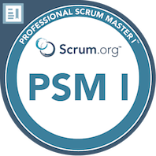

Resume of Gavin Smith

Personal Details:
Name and Surname: Gavin Smith
E-mail Address:gavin_p_smith@proton.me
Mobile Number:+27 82 941-9892
ID Number: 780830 5038 08 4
Nationality:South African
Location:Johannesburg, Gauteng
Summary/Objective Statement:
Skilled and motivated Full Stack Frontend Web Developer with a passion for creating exceptional user
experiences and innovative web applications. With a solid foundation in frontend development, I possess extensive
expertise in HTML, CSS, and JavaScript, complemented by a strong understanding of UI/UX design principles.
Equipped with backend programming knowledge and experience, I am adept at leveraging frameworks such as React
and Angular to build robust and scalable web solutions. Through my attention to detail and commitment to delivering
high-quality code, I consistently strive to exceed client expectations and drive business success.
Seeking an opportunity to contribute my technical proficiency and creative problem-solving abilities to a dynamic
team dedicated to pushing the boundaries of web development.
Work Experiance:
Delivery Manager • nVisionIT • 2019 To Present
- Overall Delivery of Web, Custom Dev and Product based solutions too clients.
- Adherence to Ways of Working principals.
- Conflict Resolution.
- Productivity Measurement.
- Quality Assurance of Software Releases.
- Investigation and Implementation of AI Dev and Office tools.
Notable Achievements:
Introduction of prerelease Demonstration and Quality checks thus allowing for a quicker deployment cycles with less regressive testing.
Cross squad resource planning and scheduling tool adoption for effective and optimal resource utilization.
Project Manager• nVisionIT • 2015 To 2019
- Client Communications and Expectation Management.
- Account Finances.
- Co-ordination of Development and Business requirement activities.
- Resource Scheduling.
- Project Plan and Status reporting.
- Implementation of IT Strategies to deliver on time and in budget.
- Tracking project performance.
- Post implementation support services for ongoing and regenerative business value.
Notable Achievements:
Successful delivery of several high value and priority client projects withing the newly adopted WOW methodology introduced within the organization (In excess of thirty-five million Rand per annum)
Adoption and integration of historical/legacy projects into the nVisionIT WOW and stakeholder engagement in this regard.
Post release support activity co-ordination of several solutions already in place.
Corporate Governance Manager• nVisionIT • 2012 To 2015 (run in parallel with EXCO)
- Finance management and reporting. Co-ordination of management accounts (planning and actuals)
- Audit preparation and co-ordination with Finance Manager, Assistance with Finance Manager for yearly finance audits.
- HR Functions (Expense Claims)
- Signoff of expense payments and management control of expenses incurred by company.
- Branding and Marketing , Template management, Marketing goods creation, branding and CI overview and signoff.
- Employment Equity and Broad Based Black Economic Empowerment planning, auditing, and certification. Planning and annual measurement and co-ordination against BBB-EE and EE plans/targets.
- Skills Development and professional Development programme management. Creation of Skills and Professional Development plans and co-ordination and executions against planned training.
- Contract Management/creation. Creation and overview/review of client-based contracts, NDA’s etc.
Notable Achievements:
Successful implementation of accounting and financials preparations in alignment with newly presented Bidvest financial guidelines.
Comprehensive skills development for development and supplemental staff.
Complete recreation of and implementation of BB-EEE amendment qualifying criteria and achievement (Level 2 achievement).
EXCO • nVisionIT • 2012 To 2015
- Strategic Initiative development.
- Sales goal determinations, planning, executions, and reporting.
- Staff Goal Development, reporting and roll out (KPI’s and Bonus Based incentives).
Helpdesk Manager • nVisionIT • 2005 To 2011
- Service Desk Operational Management.
- Call Logging, tracking, and reporting system and process creation.
- Call prioritization.
- Service Workflow Automation analysis and creation.
Various • FirstRand Bank • 1997 To 2004
- Customer Support
- Call Centre Manager (FNB)
- Private Banking Support (RMB)
- eBucks Incentive Program Advisory board.
Skills:
Project Planning and Scheduling: Ability to develop project plans, define tasks, set realistic timelines, and create schedules.
Leadership: Capability to lead and motivate a team, delegate tasks, and make decisions.
Communication: Strong verbal and written communication skills to effectively convey project objectives, requirements, and progress to stakeholders, team members, and executives.
Budgeting and Financial Management: Knowledge of budgeting principles, cost estimation, and tracking project expenses.
Agile Methodologies: Thorough understanding of agile principles and frameworks, particularly Scrum, and the ability to apply them effectively.
In Progress Studies:
Full Stack Web Development: HTML, CSS, Javascript, Node, React, MongoDB, Web3 and DApps
Hyland RPA
Awards, certifications, or other achievements:
PSM Scrum Master certification
Azure Fundimentals certification
Microsoft DevOps
